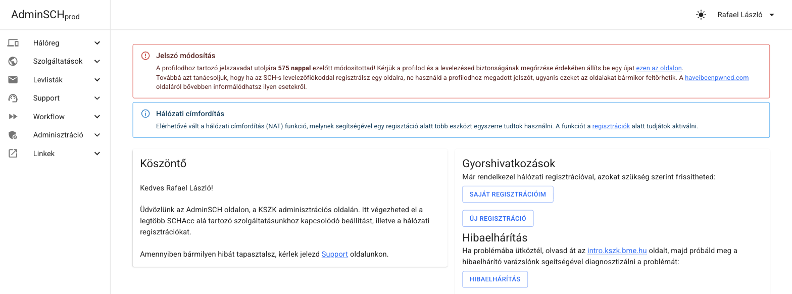

A KSZK50 prezentáció teljes, folyó szövegű változata — a diák csak a vázlat, ez itt a sztori. A számok mind ellenőrzött git-adatból jönnek (72 adminsch-ng repó + a zolij/adminsch-old legacy, összesen 6245 commit, 74 ember, 74 repó, 2013-tól napjainkig).
Na hát akkor magamról. Én még 2018-ban kezdtem a KSZK-ban, majd az idő során sorban vettem fel a különböző kalapokat. Voltam a virtualizációs klaszterünk (vmware) rendszergazdája, Devteam körvezető, a képzés főmentora, a konténerizációs (k8s) klaszterünk rendszergazdája és végül még egy pár dolog, melyet nem is említettem. Aztán az utóbbi majdnem négy évben Dániában éltem, ahol egy sportfoglalkozó cég infrastruktúráját és rendszereit kalapáltam. Az utóbbi három hónap óta újra itthon lakom.
Úgy ahogy sokan mások, én is a Schönherzbe beköltözve kezdtem a BME-n. És hát fogalmam se volt a KSZK rendszereiről. Regisztráltam a Schacc-omat, bevittem a holmimat a szobámba, egyszer lementem UTP kábelt összerakni a KSZK-sokkal és ennyi volt az interakcióm. Talán egyszer panaszkodtam, hogy mennyire zavaró, hogy két eszközzel nem lehet ugyanazt az IP-t használni a ticketing rendszeren. De ennyi.
Aztán valahol tavasszal beszippantott a KSZK képzése és végül a nyár folyamán, immáron újoncként kezdtem el foglalkozni az AdminSCH projekttel. Bevallom, ekkor még nagyon alacsony volt a tudásom, soha nem kódoltam hasonló weboldalt. De volt egy kis ismeretem és ez elég volt, hogy 2019 nyarán beüljek egy projektgyűlésre. Itt fogadott minket Kiss Tomi, Marcselló és Márki-zay Feri egy üres táblával. Mit ne mondjak, az előadásunk végére rendesen telerajzolták nekünk a táblát.
Na hát sziasztok! A mai napra az AdminSCH-t hoztam mint téma. Rögtön bele is ugranék, aztán később bemutatkozok.
Szóval, a mai napra az AdminSCH-t hoztam mint téma. Mennyien vagytok itt akik csak felszínesen vagy nem is találkoztak ezzel a rendszerrel?
Oké, akkor szedjük is szét. A KSZK — Kollégiumi Számítástechnikai Kör — egy 1976 óta működő hallgatói szakkollégium a Schönherz kollégiumban: öt csapata (Sysadmin, NETeam, DevTeam, SecurITeam, HaT) tartja üzemben a kollégium, és részben az egész BME kar informatikai infrastruktúráját — szerverektől a hálózaton át a webes szolgáltatásokig (bővebben: kszk.bme.hu). Rengeteg komplex rendszernek a gazdája, fenntartója, és pont ez a kihívás az, mely a Schönherz Adminisztrációs felületére igényt teremtett, avagy rövidebb nevén az AdminSCH-ra.
Így néz ki ma:

Kezdjük a KSZK első kihívásával. A felhasználó kezelés. Beköltözéskor sokan láthatták, hogy az első dolgotok egy új fiók létrehozása volt — a Schacc készítése. Amire a Senior-ok csak úgy referáltak, mint a fiók, mely a Schönherzes közéletbe elengedhetetlen.
Ti hogyan oldanátok meg körülbelül 500 új diák regisztrációját, annak elbírálását és email fiók generálását? Milyen kihívásokkal küzdenétek meg? Hogyan tennétek az egészet biztonságossá?
Aztán hogyan oldjuk meg, hogy ezek az új felhasználók tudjanak internetezni a koli falain belül? Akár Wifin, akár a kábelen keresztül. Hogyan társítok egy IP címet egy adott eszközhöz úgy, hogy azt a koliban lakók maguk meg tudják oldani?
Honnan tudom mégis, hogy egy diák amúgy a koliban lakik? Na és ha már internetet biztosítunk, hogyan vonjuk meg ezt valakitől, ha az internet szabályzattal szemben kihágást követ el?
És igen, az elmúlt 13 évben pont ezeket a kihívásokat kellett megoldjuk — és sok mást. Megannyi KSZK-s generáció munkájáról szeretnék kicsit mesélni.
Számokban: 6245 commit (merge nélkül), 74 repó, 74 közreműködő, 13 év git-történelem. A git-történelmünk 2013-ig nyúlik vissza — maga a rendszer még ennél is korábbi.
Ugorjunk is kicsit régebbre, nézzük meg ennek az időtvonalát. Mind a 73 repó életciklusa, az első commit-tól az utolsóig — indulás szerint rendezve, kategória szerint színezve. A szürke sávok már archiválva vannak — nem hibáztak, csak lezárt fejezetek, erről bővebben lentebb.
(Interaktív verzióban: a repó-idővonal ábra, mind a 73 repó életciklusa.)
Az, hogy a KSZK-sok feleljenek a hálózatért, már nagyon régen elindult. Akkor még egészen minimálisan volt automatizálva. Olyan legendákat is hallottam, hogy egy ponton fizikai papír formot kellett a beköltözőknek kitölteni, hogy kapjanak internetet.
A KSZK-nak már a 2000-es évek eleje óta volt egy admin-eszköze, „Admintools" néven — jóval a git előtt, arról nincs is commit-történelem, csak egy régi KSZK-s Youtube-videón látható még akcióban: youtu.be/uL8Mxj5aKm8?t=268. Az AdminSCH ennek nem a folytatása vagy átírása, hanem egy önálló, nulláról épülő rendszer: Zolij 2013. február 11-én kezdte el írni, immár a Sch adminisztrációjának teljes lefedésére szánva — innentől beszélhetünk „AdminSCH"-ról, és innentől van git-történelem is (adminsch-old repó, első commit).
Zolij Adminsch-jának hívtuk, hiszen ő volt az, aki legfőbb emberként összerakta. Ez egyébként egy mellékes projektje volt az egyetemi dolgai mellett, ugyanis ekkoriban írta az Authsch-t is szakdolgozatként. Nem csak írta — 2016 elejére be is vezette: onnantól az Authsch adta a tagság-adatokat, ő lett AdminSCH tényleges identitás-forrása, nem csak egy párhuzamos projekt. Biztonsági kérdésekben sem volt hanyag: 2016 legvégén két valódi CVE-t (CVE-2016-10033, CVE-2016-10045) is lefoltozott a PHPMailer-ben, alig pár nappal azok publikálása után. Kb. 1200 az 1369 commitból az adminsch-old-ban tőle van — évekig gyakorlatilag egyedül vitte, bár sosem volt teljesen egyedül: már 2014-től felbukkan pár más név is a repóban (összesen olyan 14 emberé, az évek során), köztük egyszer jómagam is, 2023-ban. És ha megnézzük, mennyit dolgozott összesen minden repóban: 1235 commit, 2013-tól 2018-ig, néhány kisebb megjelenéssel még 2019-ben is — sőt utoljára még 2021 novemberében is jóváhagyott egy pull requestet. Ez pontosan ugyanabban a nagyságrendben van, mint amennyit később Márki-Zay Feri (1064) vagy én magam (1249) tettünk bele a rendszerbe. Zolij önmagában az első generáció — nem lábjegyzet, hanem egyenrangú alapító.
Az első egy hónapja sokat elárul: 2013. február 21. és március 10. között lerakta a teljes alapot — díjcsomagok az SQL-ből, színes beléptetők az iDP-ről, szobaszám a FIR-ből, MAC-cím a hálós adatbázisból. Ugyanez a szobaszám–MAC–FIR hármas köszön vissza a mai Fir-service-ben is.
Ezzel az oldallal először nem is volt baj. De aztán hamar kihullottak a csontvázak, és évekre előre rémálmot okozott többeknek a KSZK-ban. Viszont kiemelném, hogy az akkori ígéretét igenis beváltotta a rendszer, és elképesztően sok ötletet, megoldást emeltünk később át.
Már 2015-ben, vagy még előbb elindult az igény, hogy átstrukturálják és újraírják. Kétszer meg is próbálták Zolij vezetése alatt — sikertelenül. Na de miért volt erre szükség?
Hát igazából mint minden újraíráskor, itt se volt már senki, aki tényleg átlátja, tudja fejleszteni és ráadásnak a kód se segített a helyzeten. Senki nem mert, és nem is akart hozzányúlni — meg lehet, az emberek úgy érezték, tudnak jobbat összerakni.
Aztán egy napon jött a hír az egyetemtől: 2019-ben szeretnék, ha a fizetős rendszer beüzemelődne a hálóregisztrációhoz. És hát a srácok sietve összedobtak egy új verziót. Úgy, hogy nem igazán értették a dolgokat — többen még akkor sose kódoltak ilyen mélyen PHP-ban, és sok megoldás lábon lövés volt inkább.
Csak hogy éreztessem, a Merge request-je a fizetős rendszernek így nézett ki: Torma Kristóf requested to merge bmejegy into kanci (a kanci volt a tényleges production branch, nem master), 2019. július 1. “Please dear Maintainer let our dear users pay their due.” 👍 5. Az Activity alatt Pünkösd Marcell kommentje: “It will be great. I am waiting so much. Please merge. Thank you and good bye.” (A tényleges merge-ölést végül Janega Zoltán vitte véghez, ugyanaznap.)
És a commit-ok nagy része így nézett ki utánna:
„price on networkRegistration.php form final5” — Madarász Bence, 2019. április 4.
„price on networkRegistration.php form final4” — Madarász Bence, 2019. április 4.
„price on networkRegistration.php form final3” — Madarász Bence, 2019. április 4.
„Merge remote-tracking branch ‘origin/bmejegy’ into bmejegy” — Madarász Bence, 2019. április 4.
„price on networkRegistration.php form final2” — Madarász Bence, 2019. április 4.
Egyszerűen lehetetlen volt a dolgokat jól tesztelni, folyton nyelvi hibákba futottunk és a kód struktúrája is nehezen átlátható volt. De nem is lehetett csak úgy eltörni, mert akkor megáll minden a koliban. 🔥
De igazából én is csak rémtörténeteit hallottam ennek az időszaknak. Egy biztos, hogy valamit változtatni kellett.
Mire én már megérkeztem, addigra egy egészen menő architektúrával drukkolt elő a csapat, és kellemes átállási tervet is készítettek. Igen, azért, ha már harmadjára próbál valamit újraírni egy csapat ember, akkor csak felkészültebbek lehettek. Persze nem volt tökéletes, de lehetővé tette az újraírást. Vizsgáljuk is meg nagy vonalakban.
Ti hogyan szerveznétek át egy hatalmas rendszert úgy, hogy akár több generációnyi KSZK-s is tudja később fejleszteni, anélkül hogy átlátná az egészet vagy mindent újra kellene írnia? Igen, mikorszolgáltatás alapú megoldást terveztek — és a végén Feri volt az, aki ezt ténylegesen összerakta és lefektette a konkrét alapokat, amire aztán évekig építkeztünk. Ha Zolij lefektette az első generációt, Feri tervezte meg és állította össze a másodikat: ő rakta le a mikroszolgáltatás-alapú architektúra konkrét alapjait. Méghozzá így nézett ki az első iterációja:

Ott bal oldalt volt egy nagy virtuális gépünk, amin futott a Legacy AdminSCH és egyébként ugyanitt ment a fenti zöld Apache proxy is. Ez a gép tele volt cronjobokkal amik PHP modulokat hívtak (például schacc rehez), innen jöttek a levelek, ez hívott be igazából mindenhova. Végtelen olyan dolog, amit csak később fedeztünk fel igazán. Mikor ott hagytam, még ez a VM mindig megvolt mint mini proxy, mert az IP címe egyes helyekre benne volt a tűzfal szabályokban. :)
De úgy képzeljétek el, hogy például évi háromszor valakinek be kellett lépnie erre a gépre csak azért, hogy átírjon egy számot egy elrejtett fájlban, amivel megtudta mondani a weboldalnak, hogy éppen melyik félévben vagyunk. Sőt talán még az adatbázisban is kellett valamit frissíteni. :)
Aztán ott jobb oldalt volt az érdemi része a dolgoknak, amin mi dolgoztunk. Lényegében írtunk egy Python alapú átmeneti frontendet, ami egy az egyben ugyanúgy nézett ki mint a régi AdminSCH. Csak a funkcionalitást kiszervezte magából más service-ekbe. Tehát ha valaki lekérte a lista tagságait akkor nem ez a python app kérte le közvetlen, hanem volt egy másik microservice. És ez a logika mentén írtunk meg mindent.
És pont mikor megérkeztem tettük meg az első átállást erre a rendszerre, 2019 szeptemberére már aktívan ment a fenti megoldás első verziója. Amikor most visszaolvastam a saját commitjaimat, kiderült, hogy jóval többet csináltam annál, amire emlékeztem: nem csak CSS-t pofoztam, hanem az adminview-service-be én raktam bele a sávszélesség-korlátozás egész logikáját, az ap-service-t és a mac-service-t is én kötöttem be a frontendbe — MAC hozzáadás, törlés, csere, saját eszközök megtekintése. Ez volt az első igazi, gépezet-mélységű munkám a rendszeren, csak épp akkoriban magam sem így éltem meg. A cikket is írtunk a weboldalunkra erről: kszk.bme.hu/articles/mi-az-a-microservice-ujrairtuk-az-admin-sch-t
Feri ekkoriban gyakorlatilag mentorom volt — egyik fő hajtóereje annak, hogy egyáltalán bele mertem vágni. Állati sok hülye kérdést tettem fel neki, az biztos, de sosem éreztette.
Na de nem volt kész egyáltalán. Nagyon sok funkció bent ragadt a legacy megoldásban, sok nyitott kérdés maradt.
Ami viszont innen visszanézve kiderül: 2020 valójában egyáltalán nem volt tétlen év — csak épp csendben zajlott, és kevesen tudtak róla. Feri ekkor rakta le szinte egyedül a reg-service alapjait, és — ami talán még fontosabb — a helm-charts/ci-templates devops-alapokat, amikre a mai napig épül a Kubernetes-klaszterünk. Agócs Dániel egy hét alatt megírta a vlan-service-t az alapjaitól — az egyik commit-üzenete szó szerint „Removed halosdb access", azaz pont akkor szűnt meg a nyers adatbázis-hozzáférés, amiről lentebb mesélek. És marcsello vitte a terhet mindhárom hálózati szinkronizálón (DNS, RADIUS, DHCP), gyors, tömény sprintekben — Sanya és Marcell Pünkösd besegítettek egy-egy darabnál —, a commit-üzenetei is elárulják, mekkora nyomás alatt készültek: az egyik, 2020 februárjából, szó szerint ennyi: „mostmar leszarja".
Csak 2021-ben állt meg tényleg minden: akkor tényleg elakadtunk, sokan eltűntek a projektből, elfoglaltak lettek. Félkész állapotban maradt, lassú volt és nem is a legmegbízhatóbb.
Sokszor voltak kieséseink az infrastruktúra miatt, sok dolgot még mindig csak adatbázis-hívásokkal lehetett megoldani. De komolyan, azzal hogy “segédnetadmin”-ná váltál a KSZK-ban, kaptál egy hozzáférést a hálós adatbázishoz, ahol egyes mezőket tudtál átbillenteni a felhasználóknak. Egészen kellemetlen élmény volt és sok sebből vérzett.
A commitszám ezt a kettősséget mutatja is — 2020-ban 727 commit, majd 2021-ben mindössze 92. Íme az egész 13 év, évenként:
Aztán 2021 végén Feri megtalált azzal, hogy találjak valami jó megoldást a Frontendre. Nekiálltam: elkezdtem a különböző dolgok tesztelését, rengeteg kódot írtam ekkoriban és kihasználtam a vizsgaszünet adta extra időt januárban — és meg is találtam a jó irányt.
De nem csak ez történt, ugyanis ekkor jött az ötlet Marcsellótól és Adriántól, hogy szervezzünk egy KSZK hackathont. Hozzuk össze az embereket egy hétvégényi kódolásra. És úgy döntöttünk, hogy AdminSCH lesz a téma, sőt valahogy megkapta az egész vezetéséhez a sapkát is.
A hackathon „egy hétvége alatt mindent újraírtunk” érzése mögött valójában évek előkészülete állt. Az auth-service már 2019 júliusa óta élt — Feri írta az első commitját —, az ip-service pedig 2020 februárjában kezdte el használni a JWT-t, tehát a hitelesítési gerinc jóval a hackathon előtt megvolt. Sőt, 2022 márciusában, három hónappal korábban, én és Feri egyazon napon (március 19.) külön-külön már a JWT bevezetésén dolgoztunk: én a react-app dev és prod környezetében, ő az auth-service teszteken. Amikor aztán elérkezett a hackathon hétvégéje, ez a már bejáratott alap futott neki élesben — napokon belül négy-öt szolgáltatás (auth-, dns-, reg-service, react-app) kapta meg a JWT-integrációt egymás után.
Tehát ott voltam 2022 elején, ötletem se volt pontosan hogy hogyan néz ki az AdminSCH, próbálom kitalálni milyen frontendünk legyen és Május végén lesz egy több napos hackathon. Ja és ugyanekkor épp főmentor voltam a kszk képzésén.

De valahogy pont összeálltak a dolgok. Az infrastruktúránkat eddigre rendbe tettük, voltak megbízható rendszereink. Konténer orchesztrációnk teljesen automatizált volt és megbízható, Gitlabunk működött, volt saját konténer registry-nk, igazából a teljes Devops Suite™. Mondanom se kell, de akkoriban egészen sokan dolgoztunk már cégekhez ahol pont ugyanezeket csináltuk és könnyedén letudtuk automatizálni.
Úgyhogy a tavasz során egyszerre több dolog is megtörtént, ugyanis lett egy Májusi határidőm hogy a hackathon-ra, avagy AdminSCH Code-ra minden legyen kész hogy könnyedén tudjanak az emberek hozzáadni.
Elkészítettünk egy dev környezetet. Összeraktuk az automatizált workflow-t ehhez. Lényegében ha egy új változást helyeztél ki, az azonnal ment a dev-re, azonnal tudtad tesztelni és az automatikus tesztek után. Majd pedig mikor megtageltél egy állapotot git-en, az azonnal ment Prodra. Sőt egy “új verzió” összefoglaló is bejött a chat platformunkra, Mattermostra. Ráadásul még saját Sentry-nk is volt, mely lényegében ha használat közben valaki belefutott egy error-ba, arról rögtön küldött nekünk üzenetet. Élőben tudtuk követni ahogy egy új funkció után hogyan törik el a felhasználók alatt egy-egy dolog és hol. Úgyhogy nagyon gyors iterációval, sok átláthatósággal tudtunk fejleszteni.
Már tényleg csak fejleszteni kellett és bevonni új embereket.
Aztán Május végére:
És többen tartottunk aznap egy előadást és elindult a fejlesztés. (Fotók: spot.sch.bme.hu/photo/2022/20220625_adminsch_code)
Mondhatni, jobb motiváció nincs is arra, mint igent mondani egy ilyenre, majd pedig hónapokon át az összes szabadidőd elégeti. De végül sikerült mindent időben előkészíteni, mindenki megjelent, az öregek biztosították a végtelen alkoholt és energia italt. És ekkor ott végre láttuk hol a vége, mit kell még lefejleszteni és megszülettek az első igazi diagrammok, prezentációk.
Ha megnézzük, ki mit épített azon a hétvégén: Gelencser Ákos vitte a React-frontend gerincét (jogosultságok, navigáció, a teljes regisztrációs folyamat), Bence Orosz nulláról felhúzta az account-service-t (a repó első commit-üzenete tőle: „i should create this earlier") és jelentősen kiépítette a márciusban már elindult schacc-service-t, marcsello egymaga megírta a workflow-service-t — az első commit-üzenete „Initial commit (it really is)“, a többi pedig arról tanúskodik, hogy tényleg sárkányokkal küzdött közben („Fought dragons”, majd „Cleaned up dead dragon bodies") —, zoleee pedig élőben, kommentelve újraírta az email-service-t. Feri közben mélyen benne maradt a háttérben: a JWT-t és a license-service-t kötötte be az auth-service-be, és márciustól szeptemberig ő vitte tovább a backend gerincét, nem csak azon a hétvégén.
A RabbitMQ-s hálózati automatizálás két lépésben állt össze: a reg-service már június 26-án, a hackathon hajrájában megkapta Feritől a RabbitMQ-integrációt, a vlan-service pedig csak október 18-án zárkózott fel hozzá — onnantól működött élesben a teljes lánc, amit fentebb leírtam.
A hackathon utáni hetek nem mentek zökkenőmentesen. Az account-service-nél augusztus 26–27-én egy teljes funkció-kör (email-reset, API-frissítések) landolt Bence Oroszttól, majd másnap mind a négy commit vissza lett vonva — és a commit-üzenetek szerint „fix endpoints broken by stupidity”, illetve „fix endpoints eskujolessz” felirattal épült újra. A fir-service-nél pedig egy több frontos, négynapos stabilizációs harc zajlott: a service-nek Postgres és MySQL között kellett váltania (Fix databases, majd Revert db hack, majd Use binary psycopg2), közben az uwsgi három nekifutásból kapta meg a helyes buffer-méretet, mire a nagy kérés-fejlécek nem törték el a szervert.
Vizsgáljuk is meg hogy hol álltunk ekkor — a hackathon utáni teljes architektúra, service-ről service-re szétszedve, funkció szerint csoportosítva:
adminsch_auth) — Authsch mögötteadminsch_reg — szint, user, SSID, channel, MAC), VLAN-service (saját DB: adminsch_vlan, szinkron a DHCP Syncerrel a NOC-on)adminsch_fir ← Kefir), Pek-service (adminsch_pek ← Pék.sch), bme-net-filter-service (adminsch_bmenet_filter ← net.bme.hu/filter) — mind az Auth-service-nek jelentadminsch_adminview, ← Adminview Syncer), React App — a Kubernetes Loadbalancer routolja: /services/<name> a megfelelő service-hez, / → React Appadminsch_dns), I42-service (saját DB: adminsch_i42, a DNS-service-t használja), Workflow-service (saját DB: adminsch_workflow), License-service (saját: MongoDB), doc-service (még csak terv — async API)Amikor egyszer valaki megkérdezi, pontosan hogyan is jut internethez egy új lakó a kollégiumban — hát pont ez volt a kérdés, amit az elején feltettem. A válasz: regisztrálsz egy IP-t az AdminSCH felületén (fejenként 2 publikusat, akármennyi MAC-cel), ez eljut a reg-service-hez, onnan pedig a VLAN-service-hez. Eközben fut egy Radius syncer és egy DHCP Syncer is a NOC-on, ami 2 percenként lekérdezi a friss adatokat, és feltölti velük a RADIUS, illetve a DHCP szervert. Amikor a géped csatlakozik, a switch a RADIUS-on keresztül lekérdezi, melyik VLAN-ba kell tennie a portot — ezt hívjuk Port Auth-nak —, utána jön egy sima DHCP kérés, és kapsz egy IP-t. Ha valaki nem kollégista, vagy nincs rá jogosultsága, azt a Fir- és Pék-service szűri ki előtte. Ilyen egyszerű — mondjuk két tucat service és pár év fejlesztés árán.

„Látható, itt már nincs PHP-megoldás, minden újra van írva.” És hát ez volt a cél. Vagy legalábbis az álom.
Amiről a legtöbben nem is tudnak: a júniusi hackathon nem volt az utolsó közös munkanapunk azon az éven. December 13. és 19. között tartottunk egy második, kisebb workshopot, adminsch-workshop néven. Itt dőlt el végleg, hogy a windows-service — ami eddig az Active Directory felé beszélt — egyszerűen beleolvad az account-service-be. Ez magyarázza, hogy a mai architektúra-ábrán miért nincs is már külön windows-service: csak egy account-v2-service van, ami közvetlenül beszél az AD-vel.
Ugyanekkor a frontend is nagyot lépett: kirepült a Create React App, helyette Vite lett a build-eszköz, eltűnt a Bootstrap és a react-toastify, és megérkezett az első profil- és jelszóváltoztatási oldal. Apró, de az egész csapat számára érezhető modernizálás — pont karácsony előtt egy héttel.
Majd pedig a jövő hónapokban sorban finomítottuk az összes összedobott dolgot. A kubernetes rendszerünk az év végére megbízható lett, a service-ek nagy része már közel volt a kész állapothoz.
És végül egy évre rá, 2023 nyarán megszerveztük a final AdminSCH Code-ot. Ahol mindent befejeztünk és meghoztuk a döntést mindenkivel, és az akkori netadminnal (a hálózatért felelős vezetővel): hogy legyen, „let’s go". Akkor átálltunk.
A régi adminsch-old repó ezzel gyakorlatilag lezárult — de nem azonnal. 2023 szeptemberében én magam is belenyúltam egy utolsó alkalommal (a TTK kart is felvettem az engedélyezett karok közé Schacc-regisztrációhoz), majd október 5-én, névtelen root felhasználóként megszületett a tíz év alatt az utolsó két commit: „Enable actual error logging" és „Fix AD Endpoint". Ennél szebb zárósort nehéz lenne kitalálni egy rendszernek, ami tíz éven át működött, főleg annak ellenére, hogy szinte senki sem látta rendesen, mi történik benne.
Igazából nem is 2023 nyara után léptem ki a képből — még négy hónapig, egészen 2024 februárjáig egyedül vittem tovább a saját frontjaimat: megírtam az account-v2-service-t nulláról (JWT-scope-ellenőrzés, egy LDAP-kliens beépített healthcheckkel, ami leállítja magát, ha az AD nem elérhető), és összeraktam egy frontend/b2b-app nevű felületet is — ami félrevezető név, valójában nem holmi „B2B" termék, hanem egy belső, react-admin-stílusú kezelőpanel a KSZK-soknak: csoport-, szerver- és személyes regisztrációk, árazás, fenntartott IP-k, DNS-rekordok CRUD-ja, mind egy helyen.
2024 februárjában aztán tényleg leálltam — és onnantól több mint két évig szinte semmit sem commitoltam, egyetlen elszórt commit kivételével 2026 májusában. Eközben átvette a stafétabotot egy új generáció: Pomucz Tomi és Wendl Lili vitte a legtöbbet, de rendszeresen dolgozott rajta Spyro, Szenes Márton Miklós, zsotroav (más néven Török Zsombor), Tóth Elíz, Tőrös András, Bence Orosz és mások is.
Amit a git mutat: a rendszer nem állt nyugalmi állapotba, hanem tovább finomodott — sőt, az egyik legrégebbi kihívásunk végre valódi megoldást kapott. Az email-service-ből email-v3-service lett (meglepően már a harmadiknál tartunk), a workflow-service-ből workflow-v2-service — a 2022-es microservice-eknek szépen sorban megjött a második nekifutása.
2024 augusztusában Kiss Tomi és Pomucz Tomi egy nagy, összehangolt munkával — a frontend, az auth-service, az account-v2-service, az email-v3-service és a workflow-v2-service egyszerre változott — nekiálltak annak, amit a legelső kihívásként feltettem az elején: hogyan oldjuk meg 500 új diák önkiszolgáló regisztrációját. A funkció neve „schaccreg" lett — ez a név egyébként már 2022 óta ott lapult egy auth-service commit-üzenetben, csak korábban nem épült köré teljes önkiszolgáló folyamat. Még ők maguk is megjegyezték egy commitban, hogy a név félrevezető, és át kellett nevezni rendes regisztrációra. 2025-ben jött hozzá az impersonation-funkció (hogy egy KSZK-s a felhasználó nevében is végig tudja csinálni a folyamatot support céljából), 2026 augusztusában pedig még mindig csiszolgatják — legutóbb egy figyelmeztető üzenetet adtak hozzá gólyáknak. Tíz évvel az után, hogy feltettem a kérdést, végre van rá önkiszolgáló válasz.
Egy másik régi probléma is megoldódott: a NAT mögötti eszközök hálózati regisztrációja. Első nekifutás 2024 nyarán volt a reg-service-ben (natreg branch, Bence Orosz és Hunor Toth), kicsit döcögősen. A végleges megoldás 2026 januárjában született meg, sch-natgw-sync néven — Wendl Lili és Pomucz Tomi a NAT mögötti routerekkel beszélő szolgáltatást írtak, VRRP failover-állapottal és Prometheus-metrikákkal, és a munka a mai napig tart. Mellé zsotroav egy egész hibakereső felületet épített a frontendbe (hogy a felhasználók maguk tudják diagnosztizálni a NAT-os gondjaikat), Tőrös András pedig a NAT-táblázat felületét, míg Tóth Elíz 2026 elején egy sor konkrét NAT-hibát javított ki.
A levlista-service — nálunk ez a levelezőlista-kezelés (Google Groups és Microsoft Exchange disztribúciós listák szinkronban tartása), gyakorlatilag a régi Sympa-service utódja. Nem volt egyenes út: Spyro 2024 őszén nekiállt, majd egy ponton feladta — a commit-üzenete szó szerint „I give up, but i’ve written down what i know" —, aztán hét hónapig senki sem nyúlt hozzá. 2025 júliusában maga Spyro tért vissza hozzá, majd az őszi hónapokban Szenes Márton Miklós vitte sokkal tovább, a saját second-release/second-release-extra-features branch-eivel — és a munka azóta is aktívan folyik.
2026 márciusában egy vadonatúj notification-service is született — Szenes Márton Miklós indította el, Spyro pedig napokon belül csatlakozott és lett a legaktívabb közreműködője. Egy generikus értesítő-rendszer ez API-kulcsokkal, feliratkozásokkal, email- és Discord-webhookos küldéssel, aminek egy része egy másik KSZK-s rendszerből, a „belepteto-sch"-ból lett újrahasznosítva.
A friss architektúra-ábra szerint közben pár kisebb, de hasznos darab is becsatlakozott: egy log-service, egy expire-job (lejáró dolgok takarítására), egy fir-job, egy mac-oui-service, és — a névválasztás magáért beszél — egy daily-restart-hack nevű cronjob. Az account-v2-service mostanra közvetlenül beszél az Active Directory-val, az email-v3-service pedig az Outlook SMTP API-val — szóval az egyetemi Microsoft-infrastruktúrával is egyre szorosabb az integráció.
A devops-oldal sem volt mentes a szenvedéstől: 2025 novemberében Tóth Elíz két egymást követő napon írta be a helm-charts repóba, hogy „I am losing my goddamn mind", majd „Added weight because kube is a lousy motherfucker" — a Kubernetes-klaszter, amire az egész rendszer épül, néha 2025-ben is ugyanolyan makacs tudott lenni, mint 2020-ban.
Szóval a történet nem állt meg 2023-ban, és nem is csak simán továbbfolyt — közben lezárult egy tíz éve nyitva álló kérdés is. Most, hogy visszaköltöztem, pont jókor van itt ez az előadás, hogy behozzam a lemaradást. :)
A rendszer sosem egyetlen pillanatban jött létre — így nézett ki 2019-ben, így 2022 után, és így néz ki a hálózati automatika, amire a legbüszkébbek vagyunk.
(Interaktív verzióban mindhárom diagram nagyítható, és valódi, szerkeszthető draw.io-fájlként is elérhető az assets/diagrams/ mappában.)
Ha megnézzük a rendszert funkció-kategóriánként szétbontva — hol folyt a legtöbb munka az elmúlt 13 évben —, hat nagy kategória rajzolódik ki: bejelentkezés/jogosultság, regisztráció/hálózat, scraperek, kommunikáció, külső integrációk és az admin felület. A 73 mai repó mindegyike ezek valamelyikébe tartozik. Ha pedig tisztán a nyers commit-mennyiség szerint rangsorolunk, a régi adminsch-old repó a mai napig #1 — tíz évnyi PHP-történelem nem múlik el nyomtalanul egyetlen újraírás alatt sem.
Ha valaki csak a funkciókra kíváncsi, íme az egész történet pár sorban:
ip-service, mac-service, dns-service, reg-service); bevezetik a fizetős hálóregisztrációt (innen a final5-ös commit-vicc)helm-charts/ci-templates) — 2021-ben áll meg tényleg mindenemail-v3, workflow-v2); schaccreg — végre önkiszolgáló diák-regisztráció, a nyitó kihívásunkra a válasz 10 évvel később; a NAT-regisztráció is megoldódik (sch-natgw-sync); levlista-service (levelezőlista-kezelés, döcögős újraindítással); vadonatúj notification-service és egy belső admin-panel (b2b-app) — a stafétabotot Pomucz Tomi, Wendl Lili és a többiek viszikAmi mindezt ténylegesen működteti, az egy külön történet. A KSZK-n belül a NETeam és a Sysadmin gyakorlatilag ugyanazok az emberek — nem két külön csapatról van szó, aki „besegített" az AdminSCH-nak, hanem ugyanazokról, akik az AdminSCH-t is írták, csak épp a Sysadmin-csoportok GitLab-jában van évekre visszamenő automatizáció, jóval az AdminSCH-n túlra is kiterjedően. Ami ebből közvetlenül idetartozik:
A konténer registry-t (Harbor) magam raktam le 2021 novemberében — Terraform hozza létre a VM-et, Ansible telepíti és konfigurálja, LDAP-hitelesítéssel. Azóta 69 commit, folyamatos verzió-frissítésekkel (legutóbb 2025 áprilisában v2.13.0-ra), rlacko (a git-userem — ez is én vagyok) is besegített néhány upgrade-be.
A Kubernetes-klaszter, amin a mai AdminSCH fut, Kubespray-alapú, Cilium hálózattal, cert-managerrel, VictoriaMetrics-szel (Prometheus helyett) és Azure AD-be kötött Grafana/Dex bejelentkezéssel — főleg én és Eck Balázs István tartottuk karban. Ezt a klasztert azóta lecserélték egy újabbra.
A RabbitMQ üzenetsor VM-jét is én építettem — de nem a hackathonon: 2021. június 29-én, egy egész évvel azelőtt, hogy bármelyik AdminSCH service ténylegesen használni kezdte volna. Amikor 2022 júniusában a reg-service megkapta a RabbitMQ-integrációt, a szerver már egy éve ott állt, várva.
34 repó — a mai 73-ból közel a fele — mára archiválva van a GitLabon: vagy leváltotta őket valami, vagy megoldottuk máshogy a problémát, amire épültek. Ezek nem hibák, csak lezárt fejezetek.
A leglátványosabb csoport a 2019-es Python-generáció kilenc tagja: ap-service, ad-service, exchange-service, mac-service, ipwave-service, dhcp-service, ip-service, template-service és a transient-server — mind ugyanazon a napon, 2022. január 28-án kapta az utolsó commitját (egy rutin „Update python version and Pipfile.lock”), egy nappal azelőtt, hogy a hackathon-előkészület elkezdődött volna. Nem egyenként múltak ki: egyben, csendben nyugdíjazták őket, amikor a júniusi újraírás mindent lecserélt. (Az ad-service-nek közben valódi, éles memóriaszivárgása is volt — 2019 októberében Csaba Zamolyi hotfix/memleak branchen javította.)
A halosdb-splitter — a nyers adatbázis-hozzáférést kiváltó eszköz — pontosan a hackathon hétvégéjén (2022-07-31) lett fölösleges, amint a service-ek valódi API-kat kaptak. Néhány hackathon-hétvégi ötlet meg sosem jutott túl a vázon: a fir-syncer-job és a net-filter-service egyetlen „initial commit” után abbamaradt, egy korai filter-bmenet-service-próbálkozás (PoC) helyett végül a ma is élő bmenet-filter-service/bmenet-filter-job lett a megoldás, az adminview-mock-service pedig egy tesztelésre szánt mock volt, ami nem nőtt túl a szerepén.
A license-service-kotlin mellett volt egy Java-s testvérkísérlet is (adminsch-security-java) — öt commit, 2020 végén, aztán soha többé: a Python-verzió (adminsch-security-python, ma 45 tag-gel) vitte el a győzelmet.
A többi archivált repó (sympa-service, netwatcher-backend, reg-exporter, payment-reader, adminsch-models, adminsch-logging-python, maintenance-site) egyszerűen befejeződött: megcsinálták, amire valók voltak, és nem igényeltek több munkát. A futuresch pedig valójában nem is AdminSCH-projekt volt, inkább egy vicces mellékvágány marcsellotól, tele DNS-mémekkel.
A teljes commit-történelmen végigmenve ezek a konkrét, névvel azonosítható kezdeményezések rajzolódnak ki — 13 év, egy táblázatban:
| Kezdeményezés | Időszak | Kik |
|---|---|---|
| Alapítás (AdminSCH) | 2013-02 – 03 | Zolij |
| WiFi-kezelő modul | 2013-04-11 – 13 | Zolij |
| MAC-kereső v0.1 | 2014-05 – 06 | hunbalazs |
| Exchange-integráció nehézségei | 2014-07 – 08 | Zolij |
| macsearch — switch-alapú újraírás | 2015-11-09 – 15 | Kalmár Balázs, Zolij |
| Címzési séma átdolgozása | 2016-01-07 | Dániel Bakai |
| Authsch-integráció | 2016-01 – 02 | Zolij |
| 2016 nyár — regisztrációs karbantartás | 2016-07 – 09 | Zolij |
| Jelszó-visszaállítás és AD-felhasználókezelés | 2016-12-03 – 05 | Zolij |
| Belső hálózati regisztráció | 2017-01 – 2018-07 | Zolij |
| UI-modernizálás (toast, inline-szerkesztés) | 2017-10-02 – 17 | Zolij |
| RVT→KSZK névváltás | 2019-03 – 10 | marcsello, Janega Zoltán |
bmejegy — fizetős hálóregisztráció |
2019-04 – 07 | Torma Kristóf, Márki-Zay Ferenc, Madarász Bence, Sanya |
| dns-service — az alapok lerakása | 2019-06-05 – 18 | gyeben |
| auth-service és dns-service korai váza | 2019-06 – 07 | Bendegúz Gyönki |
| A transient-server és az első microservice-ek felépítése | 2019-06 – 07 | Bodor Máté, Márki-Zay Ferenc |
| ap-service — egy nap alatt nulláról | 2019-07-30 | Armin Zavada |
| AP/MAC/hálózat-regisztráció UI | 2019-08 – 10 | Laszlo Rafael, Márki-Zay Ferenc |
| ad-service megalapítása | 2019-08-07 – 25 | Csaba Zamolyi |
| Másodlagos (inner) IP-cím regisztráció | 2019-08-17 – 25 | Adam Kovacs |
| ad-service memóriaszivárgás — élesben javítva | 2019-10-03 | Csaba Zamolyi |
| template-service — „R works from CRUD” | 2019-12-19 | Csókás Bence |
| ipwave-service megalapítása | 2020-01-16 – 18 | Bodor Máté |
| Hálózati syncer trió | 2020-02 – 2021-12 | marcsello, Sanya, Marcell Pünkösd |
helm-charts + ci-templates |
2020-05 – 2021-01 | Márki-Zay Ferenc |
reg-service (v1) |
2020-06 – 12 | Márki-Zay Ferenc |
vlan-service (v1) |
2020-07-13 – 20 | Agócs Dániel |
license-service-kotlin (elvetve) |
2020-09 – 2021-07 | Benjamin Peter (kezdte), Márki-Zay Ferenc (a nagyja) |
| adminsch-security-java kísérlet | 2020-10 – 11 | Márki-Zay Ferenc |
i42-service (szóló kezdő projekt) |
2021-02 – 07 | tothadam |
| RabbitMQ-VM felépítése | 2021-06-29 | Laszlo Rafael |
| Harbor — konténer registry felállítása | 2021-11-03 – 09 | Laszlo Rafael |
| windows-service (eredeti) | 2021-12 – 2022-03 | Bence Orosz, Benjamin Peter |
| filter-bmenet-service — korai PoC-próbálkozás | 2022-03-19 | György Kurucz |
| netwatcher-backend — a JWT-hitelesítés összerakása | 2022-03-19 – 20 | Cseh Viktor |
| AdminSCH Code hackathon | 2022-06-24 – 26 | sokan — ld. fentebb |
| email-service — JWT, RabbitMQ és Sentry integrálása | 2022-06 – 11 | Horváth Zoltán |
| Személyes regisztráció a frontenden | 2022-06 – 07 | Sinkó Dániel |
vlan-service-ng (elvetve) |
2022-07-28 – 30 | Bence Orosz, Gyimesi Norbert, Cseh Viktor |
| Syncerek átállása az új backendre | 2022-07 – 09 | marcsello, Bence Orosz, gombossb, Eck Balázs |
| Sentry bevezetése | 2022-08 – 09 | Laszlo Rafael, Bence Orosz |
dns-advanced UI rework |
2022-10 – 11 | Gelencser Ákos, Laszlo Rafael |
| RabbitMQ élesben | 2022-10-18 | Laszlo Rafael |
| Második workshop | 2022-12-13 – 19 | Tamas Kiss, Laszlo Rafael |
account-v2-service |
2023-01 – 2024-02 | Laszlo Rafael |
| React-app UI/UX-csiszolás és MAC-formátum normalizálás | 2023-02-20 – 28 | gombossb |
| mac-oui-service megalapítása | 2023-02-22 – 26 | Horváth Zoltán |
| DNS host review oldal megújítása | 2023-02-25 – 26 | gabor |
b2b-app admin-panel |
2023-08 – 2024-02 | Laszlo Rafael |
NAT-regisztráció / sch-natgw-sync |
2024-07 – 2026-08 | Bence Orosz, Hunor Toth (első nekifutás), Wendl Lili, Pomucz Tamás (végleges) |
| Csoportos és egyéni regisztráció a b2b-appban | 2024-07 – 10 | zyxtron |
| Személyes hálózati regisztrációk (personalreglist) | 2024-07-27 – 29 | zsotroav |
schaccreg — önkiszolgáló regisztráció |
2024-08 – 2026-08 | Tamas Kiss, Pomucz Tamás |
levlista-service |
2024-09 – 2026-09 | Spyro, Szenes Márton Miklós |
| IPv6-cím automatikus generálása regisztrációhoz | 2024-09-04 | zyxtron |
| DNS-rekordok kezelése a felületen | 2025-02-27 | László Mócsy |
| DNS-zóna delegálás | 2025-06 | Muzsai László |
| Enum-refaktor, egy nap alatt | 2025-08-01 – 02 | Abonyi Bence |
| Hálózati troubleshoot guide | 2025-08-01 – 17 | zsotroav |
| Sicc-kereső — DataGrid-alapú újraírás | 2025-08-02 – 17 | Tőrös András |
| PEK-csoportok bevezetése | 2025-08 | Muzsai László |
| reg-service modernizálása | 2025-10 – 11 | Illés |
Egyedi DNS-rekordok (feat/custom_dns) |
2026-01-04 | Pomucz Tamás, valkosch |
| NAT-regisztráció renew-logika és hibajavítások | 2026-01 – 03 | Eliz |
| NAT-táblázat felülete | 2026-01 – 02 | Tőrös András |
| levlista-service adatbázis-átalakítás | 2026-03-05 | tamas722 |
notification-service |
2026-03 – 09 | Szenes Márton Miklós, Spyro |
A puszta commit-számokon túl a git tag-ek is mesélnek: 46 repóban összesen 992 valódi verziójelölés van 2019 és 2026 között — egy teljesen független adatforrás ugyanahhoz a történethez, és pontosan ugyanazt mondja.
| Év | Kiadott tag-ek |
|---|---|
| 2019 | 105 |
| 2020 | 141 |
| 2021 | 12 |
| 2022 | 196 |
| 2023 | 183 |
| 2024 | 99 |
| 2025 | 95 |
| 2026* | 161 |
(2026 részleges év)
augusztus 26-án Feri egyetlen „Prod CI" nevű commit-tel egyszerre kapcsolta be az automata verziózást 11 service-en (ad-, adminview-, ap-, auth-, dns-, exchange-, fir-, ip-, mac-, sympa-service és a transient-server) — innen az azonos napon felbukkanó rengeteg v0.1 tag. A leghosszabb életű, folyamatosan tag-elt repó a dns-service: hét éven át, v0.1-től (2019-08-26) egészen 1.15.5-ig (2026-07-18) sosem állt meg. A react-app viszont a legaktívabb: 158 tag négy év alatt.
július 31-én négy szolgáltatás (react-app, reg-service, vlan-service, license-service) mind ugyanazon a napon kapta meg az első 1.0.0 jelölését — méghozzá pontosan aznap, amikor a vlan-service-ng néven futó párhuzamos újraírási kísérletet elvetették, és az eredeti vlan-service kapott helyette friss, FastAPI-alapú átírást: a hackathon utáni fejlesztés aznap érett meg egyszerre kiadható állapotra. (Aznap, a saját dns-service commit-üzenetem szerint: „Why do I hate myself?" — a release-nap sem ment feszültség nélkül.) A vlan-service 1.5.0-s tagje pedig pontosan 2022. október 18-ára esik — ugyanarra a napra, amikor a RabbitMQ élesbe állt. Az auth-service 1.4.0-rc1 tagje szeptember 2-án, a Sentry-bevezetés záró napján készült.
2021-ben mindössze 12 tag született a teljes rendszerben — ugyanaz a csend látszik itt is, amiről fentebb, a „lassú évek" kapcsán volt szó, csak épp egy teljesen más adatforrásból megerősítve.
Volt itt-ott egy kis emberi esetlegesség is: az auth-service 1.5.1-security-patch tagje az egyetlen a 992 közül, aminek névvel jelzett oka is van, nem csak verziószáma; az account-v2-service-nél 2024 augusztusában egy elgépelt extra pont került a tag névbe (1.3.0.-rc3, 1.3.0.-rc4) — két kiadáson át javítatlanul. És nem minden ág futott célba: a helm-charts-ban egy 2023 januári, pls-work nevű branch (rlacko egyetlen „fix" üzenetű commitja) és a react-app-beli, önbevallottan félkész netwatcher-integration branch (2022 márciusa, Schulcz Ferenc: „Half-ready netwatcher integration with broken charts") a mai napig ott lóg mergeletlenül.
Commitok évente közreműködőnként, 2013-tól — a hét legaktívabb ember névvel, a maradék 67 fő egy összesített sávban (lentebb mindenki névvel is szerepel). Jól látszik, ahogy adja tovább egyik a másiknak: Zolij → Márki-Zay Feri → én → Pomucz Tomi és Wendl Lili. Mindig akad, aki átveszi, mire az előző csúcsa elhalványul.
És ugyanez összesítve, ki mennyit tett hozzá a rendszerhez összesen — mind a 37 ember névvel, aki elérte a 10 commitot, a maradék 37 fő (fejenként 10 alatt, összesen 131 commit) egy összesítő sorban (a „zsotroav” névre fut össze Török Zsombor néhány korábbi commitja is):
Íme mind a 37 ember névvel, aki elérte a 10 commitot — a maradék 37 fő (fejenként 10 alatt) egy összesítő sorban (a „zsotroav” névre fut össze Török Zsombor néhány korábbi commitja is, innen a kerekebb szám):
| Közreműködő | Összes commit |
|---|---|
| Laszlo Rafael (én) | 1242 |
| zolij | 1235 |
| Márki-Zay Ferenc | 1064 |
| Pomucz Tamás | 477 |
| Wendl Lili | 296 |
| Bence Orosz | 255 |
| Tamas Kiss | 247 |
| Spyro | 150 |
| marcsello | 143 |
| Gelencser Ákos | 124 |
| zsotroav | 103 |
| Szenes Márton Miklós | 100 |
| Torma Kristóf | 98 |
| gombossb | 71 |
| Eliz | 52 |
| Sanya | 40 |
| Kalmár Balázs | 39 |
| Abonyi Bence | 36 |
| Muzsai László | 34 |
| Horváth Zoltán | 31 |
| Bodor Máté | 29 |
| Agócs Dániel | 26 |
| Tőrös András | 21 |
| Gyimesi Norbert | 21 |
| Csaba Zamolyi | 18 |
| Benjamin Peter | 18 |
| Hunor Toth | 18 |
| zyxtron | 16 |
| tothadam | 15 |
| Adam Kovacs | 14 |
| Madarász Bence | 14 |
| Illés | 13 |
| Cseh Viktor | 13 |
| hunbalazs | 12 |
| gyeben | 10 |
| Dániel Bakai | 10 |
| 37 további ember (fejenként 10 commit alatt) | 131 |
A puszta commit-szám azt mondja meg, ki mennyit dolgozott. Nem mondja meg, mi lett a munkájából. Ezért soronként is végigmentem a teljes git-történelmen: minden valaha hozzáadott sornak pontosan három sorsa lehet, és ez a három mindig 100%-ot ad ki — aktív (ma is fut egy élő szolgáltatásban), eltűnt (valaki azóta felülírta vagy törölte — ez teljesen normális, ez a kód élete), és archivált (a sor technikailag megvan a git történelemben, de a szolgáltatás, amiben él, már nem üzemel). A legszemléletesebb eset Zolijé: az általa írt sorok közül, ami ma is megvan valahol, 99,9%-a a mára archivált adminsch-old monolitban ül — nem azért, mert rossz volt a kódja, hanem mert az egész, amit épített, azóta lecserélődött. Az első generáció alapjai formálisan lezárt fejezetek, még ha a rendszer, amit elindítottak, ma is él.
Köszönet mindenkinek, aki valaha akár egyetlen sor kódot is hozzáadott ehhez a rendszerhez. Tényleg mindenkinek:
Abonyi Bence, Adam Kovacs, Adrián Robotka, Agócs Dániel, Anna Bajnok, arcter, Armin Zavada, Bakos Ádám, Bence Orosz, BenceGyurus, Bendegúz Gyönki, Benjamin Peter, benjoe, blint, Bodor Máté, Csaba Zamolyi, Cseh Viktor, Csókás Bence, d.bajnok, Dániel Bakai, Eck Balázs, Eckl Máté, Eliz, florafelalora, fodorpatrik2000, Fricska Kamilla, gabor, Gelencser Ákos, gombossb, gyeben, Gyimesi Norbert, György Kurucz, Horváth Zoltán, hunbalazs, Hunor Toth, Illés, Janega Zoltán (zolij), Kalmár Balázs, kozkbalzs23, László Mócsy, Madarász Bence, manko, Marcell Pünkösd, marcsello, Márki-Zay Ferenc, Muzsai László, peterbenjamin2000, Pomucz Tamás, radlaci97, Revolex, sadneutrino, Sanya, Sinkó Dániel, Spyro, Szenczy Balázs, Szenes Márton Miklós, Takács Gergő Tibor, Tamas Kiss, tamas722, Torma Kristóf, tothadam, tothgabor, Tőrös András, valkosch, Vikus, Várkonyi Kornél, Wendl Lili, zsotroav, zyxtron, Ónodi-Kiss Lili.
Kérdések?